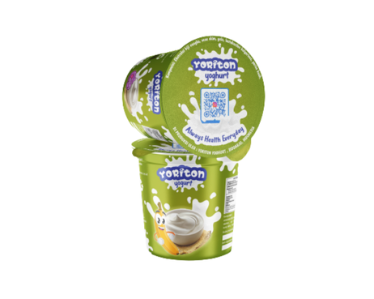
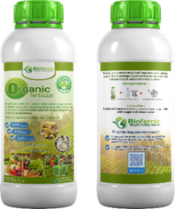

SALES ANALYST • BUSINESS ANALYST • AGRIBUSINESS MANAGEMENT
Hi, I'm
Wildanu Ubaidillah
Sales & Business Analyst
Fresh graduate in Agribusiness Management with a GPA of 3.96/4.00 (Accreditation: Excellent BAN-PT) and strong analytical capabilities in sales analysis, demand forecasting, business analysis,
inventory planning, and data-driven decision making. Seeking opportunities as a Sales Analyst, Sales Data Analyst, Business Analyst, or Commercial Analyst.
I am a fresh graduate in Agribusiness Management from Jember State Polytechnic with a GPA of 3.96/4.00 (Accreditation: Excellent BAN-PT) and strong analytical capabilities in
sales analysis, demand forecasting, business analysis, inventory planning, and data-driven decision making.
Experienced in managing operational data and inventory planning as a Warehouse Administrator, applying Material Requirement Planning (MRP) and Economic Order Quantity (EOQ) to
enhance stock planning and reduce inventory budgets by 20%.
Conducted demand forecasting research utilizing Artificial Neural Networks (ANN Backpropagation), developed market penetration strategies, and formulated business models through SWOT analysis and
national-level business plan competitions.
Dokumentasi artikel studi kasus inovasi produk dan kompetisi nasional, pengalaman kerja industri, serta dedikasi riset & pengabdian masyarakat.
AGRIFAIR BUSINESS PLAN 2022 • POLITEKNIK NEGERI JEMBER • JUARA 3 NASIONAL
Yoriton as an innovative solution for healthy plant based yoghurt
Grateful for the opportunity to gain new experiences, meet inspiring individuals, and gain fresh insights through the Business Plan Agrifair 2022, hosted by the Agribusiness Management Student Association
of Politeknik Negeri Jember. The event, held on September 24–25, 2022, will remain a meaningful and valuable memory—unveiling innovative narratives that address child malnutrition and stunting prevention
through sustainable, research-backed food technology.
With every formulation milestone, our team navigated the intricacies of functional ingredients, harmonizing nutritional value with accessible consumer acceptance for vulnerable age groups.
VIDEO DOKUMENTASIYoriton: Inovasi Yoghurt Biji Nangka

🥛
YORITON YOGHURT
Fortified Jackfruit Seed Yogurt
YORITON Innovation Of Yoghurt
Yoriton is a fortified yogurt made from jackfruit seeds combined with natural taro and honey flavors that is practical, delicious, and nutritious. Yoriton is rich in nutrients, especially from jackfruit
seeds and mango extract, which are good sources of carbohydrates, fiber, calcium, and potassium for children and toddlers suffering from stunting and obesity.
🌱
Upcycled Jackfruit Seeds
Converting agro-waste into high-fiber, pre-biotic functional components.
🛡️
Anti-Stunting & Lactose Friendly
Rich in essential micronutrients (Ca, K, Fe, Vit A/C) suitable for lactose-intolerant youth.
Plant-BasedLactose-FreeRich in CalciumZero Artificial Colors🏆 3rd Place Agrifair 2022
YOUTH ECONOMIC COMPETITION 2023 • UNIVERSITAS PADANG • JUARA 1 NASIONAL
Biofernic as an innovative solution for environmentally friendly liquid organic fertilizer
Driven by the urgent need to advance sustainable farming practices and champion a zero-waste circular bio-economy, Biofernic was conceptualized to convert ubiquitous agricultural waste into a powerful
organic soil restorer. Representing Politeknik Negeri Jember at the national Youth Economic Competition (Universitas Padang, 2023), the project successfully secured 1st Place (Juara 1).
The initiative provides smallholder farmers with an accessible, high-yield biological alternative to escalating synthetic chemical fertilizer prices.
VIDEO SHOWCASEBiofernic: Pupuk Organik Cair Ramah Lingkungan

🥛
BIOFERNIC
Organic Liquid Fertilizer
BIOFERNIC Innovation Of Liquid Organic Fertilizer
Biochemical Formula Breakdown
🍌 Banana Peel Extract: Abundant natural potassium (K) that accelerates flowering and fruit set.
🥚 Eggshell Calcium: Bioavailable calcium (Ca) carbonate to strengthen plant cell walls and prevent blossom end rot.
🧪 Molasses Bioactivator (EM4): Carbon-rich energy source accelerating microbial decomposition into humic substances.
BIOFERNIC Liquid Organic Biofertilizer
Field application trials on horticultural trial plots demonstrated accelerated vegetative growth rates, heightened root elongation, and enhanced soil moisture retention. Economic modeling revealed that on-farm Biofernic
production yields up to a 35% reduction in total fertilizer expenditures
while rejuvenating degraded agricultural soils.
Zero-Waste AgricultureOrganic Certified Formula35% Cost Efficiency🥇 1st Place Padang University 2023
NATIONAL BUSINESS PLAN BRAWIJAYA 2022 (JUARA 3) & ESSAY MALANG 2021
Davocas & Feecha: Zero-waste functional innovations with strategic SWOT analysis
Davocas Instant Boba: Nutritious instant boba crafted by extracting natural tannins from discarded avocado seeds as an immunity-boosting functional food response during the pandemic. Supported by
comprehensive consumer sensory testing and a full SWOT analysis matrix
presented at Universitas Brawijaya (3rd Place National).
Feecha Antiseptic Paper Soap: A portable, natural antiseptic functional paper soap formulated with active antimicrobial extracts from papaya leaves (Cnidoscolus aconitifolius) and upcycled coffee
grounds. Finalist at the National Essay Competition, Universitas Negeri Malang (2021).
🥑
Avocado Seed Tannin Extraction
High natural antioxidant and polyphenol capacity formulated into popular culinary formats.
Functional BobaAntiseptic Paper SoapSWOT Business Strategy🥉 3rd Place Brawijaya 2022
JAN 2025 — AUG 2026
Sales
PT Labuna Jaring Nusantara — Mojokerto, East Java
Conducted market penetration and customer analysis for powdered spice products, including pepper, coriander, turmeric, and garlic powder, to identify potential markets and customer segments.
Identified prospective customers and distribution opportunities through market research, customer prospecting, and competitor analysis.
Analyzed customer needs, market trends, pricing, and product preferences to support
data-driven sales strategies.
Managed customer relationships and followed up on sales opportunities to support customer acquisition and market expansion.
Publikasi riset dan kajian ilmiah terapan yang berfokus pada kecerdasan buatan, sistem informasi spasial (GIS), optimasi rantai pasok, dan pengolahan citra digital.
Riset peramalan permintaan bahan baku lada bubuk instan di PT XYZ menggunakan metode
Backpropagation Artificial Neural Network (ANN) yang diintegrasikan dengan optimasi persediaan EOQ dan ROP untuk menekan biaya inventaris hingga 20%.
ANN BackpropagationDemand ForecastingInventory PlanningMATLAB / Python
Analisis spasial kesesuaian lahan tambak ikan bandeng di Kabupaten Sidoarjo menggunakan
Geographic Information Systems (GIS), interpolasi Inverse Distance Weighted (IDW), dan teknik overlay multi-kriteria untuk zonasi kelas kesesuaian S1–N.
Pemetaan berbasis geospasial distribusi populasi dan densitas ternak unggas di Kabupaten Sidoarjo guna mendukung tata ruang peternakan berkelanjutan, mitigasi risiko biosafety, dan analisis pasar komoditas.
Pengembangan algoritma pengolahan citra digital (computer vision) untuk klasifikasi dan sortasi otomatis kematangan serta kualitas buah tomat berdasarkan segmentasi warna dan morfologi permukaan.
Final Project / Thesis:
"Control of Instant Ground Pepper Raw Material Inventory Based on Demand Forecasting Using Artificial Neural Networks (Case Study at PT XYZ, Mojokerto)"
GET IN TOUCH
Let's Connect &
Collaborate.
I am actively seeking professional opportunities as a Sales Analyst, Sales Data Analyst, Business Analyst, or Commercial Analyst, and open to roles in Inventory Planning, Supply Chain, and Agribusiness
Analytics.
📍 Mojokerto, East Java, Indonesia 📱 +62 877-7017-8769